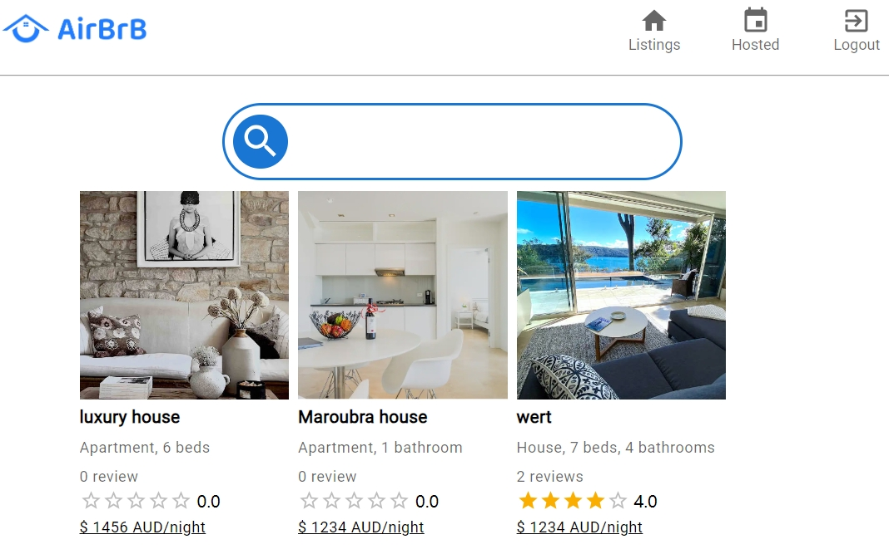
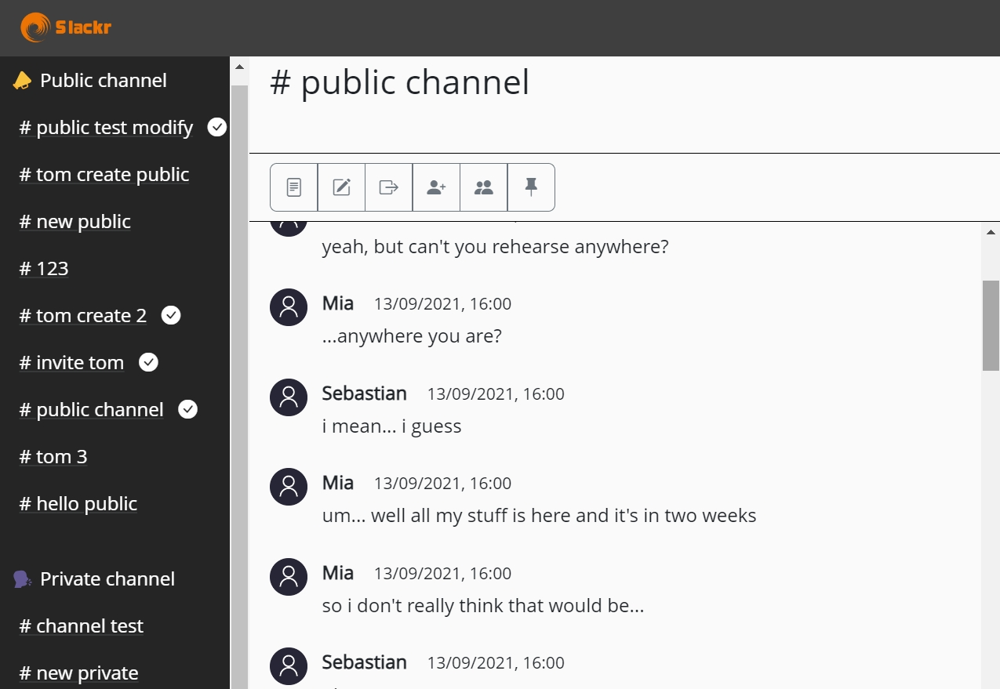
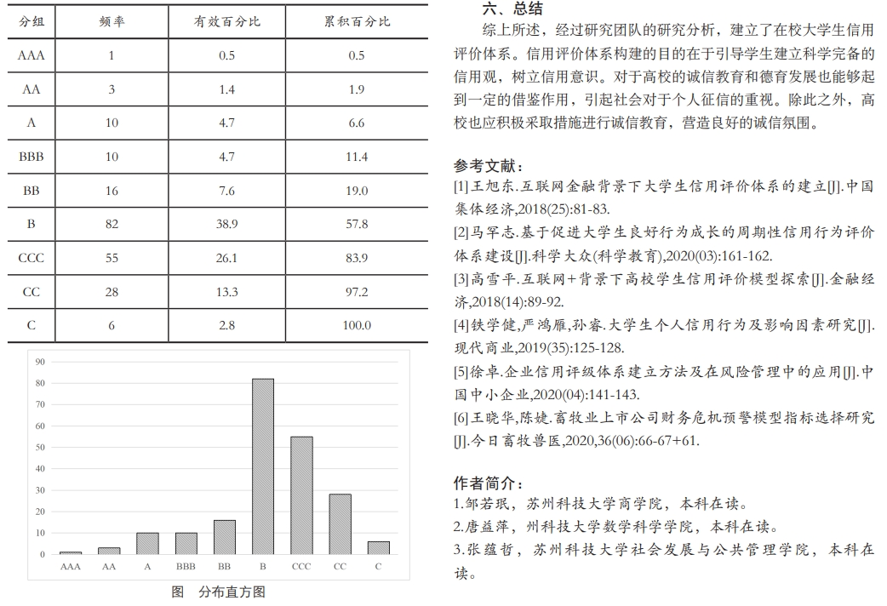
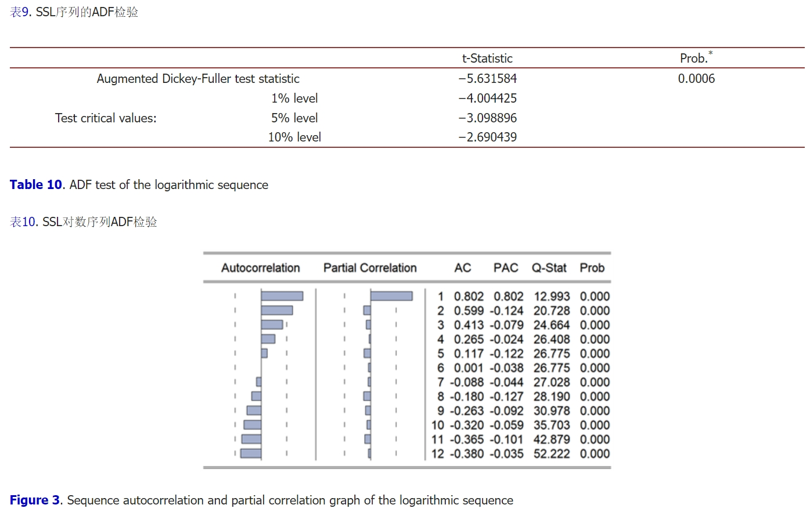

Airbrb
A person to person property renting service platform.
Closely modelled off the popular property renting platfrom Airbnb.

Slackr
A messaging platform. A frontend website in Vanilla JS.
A frontend for a UNSW rip-off version of the popular messaging tool Slack.

Computer Vision - Detection and Classification
Perform object detection and classification on the Penguins versus Turtles dataset. Faster R-CNN model is used as the basic model, supplemented by Mosaic data augmentation to expand the training dataset, and GrabCut algorithm is employed for bounding box correction.

Research on the Construction of Credit Evaluation System for College Students
Research Purpose: Establish a credit evaluation system that is suitable for university students and is an innovative theory.
• Referred to bank credit evaluation system and designed a questionnaire that could collect important information.
• Sent out questionnaires and 214 questionnaires were valid. Analyzed questionnaire data by SPSS, compared group differences and reached the result that most students were at the middle level of the credit model.

Systematic Analysis and Evaluation of Regional Social Security Level: A Case Study of Suzhou and its Surrounding Areas
Research Purpose: Analyze the level of social security in Jiangsu and Zhejiang Province, especially in Suzhou.
• Determined influencing factors and analyze the relationship between them. Collected data from the statistical yearbook.
• Classified cities with cluster analysis, and conducted grey correlation analysis to identify the most influential factors.
• Wrote and ran SAS and Eviews programs of ARIMA model.

Application Research of ‘Mathematical Analysis’ Course Based on Mathematical Software (Mathematica)
Research Purpose: Realize the problems in the text of Mathematical Analysis by software, such as Mathematica, and apply them to real life.
• Studied Mathematical Analysis and determined the specific research direction as conditional extremum.
• Created an innovative numerical method of conditional extremum by transforming equality constraints into inequality constraints and realized this method by the software.